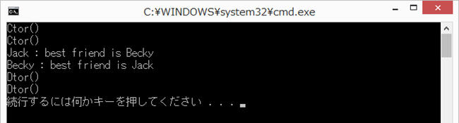

std::weak_ptr です。shared_ptr では循環参照したときにメモリ解放できないのでこれを使用したりします。
"shared_ptr" も万能ではなく、循環する参照（リング参照）をうまく扱うことができないという欠点を持っています。参照カウンタが０にならないからです。
例えば次の例では２つのオブジェクトがスマートポインタによってお互いを参照しており、参照カウンタが１のままとなってしまっていつまでの "delete" を実行しません。
#include <iostream> // cout, endl, EXIT_SUCCESS
#include <memory> // shared_ptr
#include <string> // string
using namespace std;
class Person {
private:
string name_; // 名前
public:
Person(string name) // コンストラクタ
: name_(name), pBestFriend(nullptr)
{
cout << "Ctor()" << endl;
}
~Person() // デストラクタ
{
cout << "Dtor()" << endl;
}
shared_ptr<Person> pBestFriend; // 親友を指すポインタ
string getName(){ // name_ のアクセッサ
return name_;
}
};
void PrintPerson(shared_ptr<Person> pPerson)
{
cout << pPerson->getName() << " : best friend is " << pPerson->pBestFriend->getName() << endl;
}
int main(int argc, char* argv[])
{
shared_ptr<Person> a(new Person("Jack"));
shared_ptr<Person> b(new Person("Becky"));
a->pBestFriend = b;
b->pBestFriend = a;
PrintPerson(a);
PrintPerson(b);
return EXIT_SUCCESS;
}
[実行例] デストラクタが実行されていません。
"shared_ptr" の参照カウンタを増やさない "weak_ptr" を使うことで上記を改善できます。ただし "weak_ptr" の値を使用するときは、"lock()" により参照先が有効な値であるか（すでに解放されていないか）を確認して使用する必要があります。
#include <iostream> // cout, endl, EXIT_SUCCESS
#include <memory> // shared_ptr
#include <string> // string
using namespace std;
class Person {
private:
string name_; // 名前
public:
weak_ptr<Person> pBestFriend; // 親友を示すポインタ
Person(string name)
: name_(name)
{
cout << "Ctor()" << endl;
}
~Person()
{
cout << "Dtor()" << endl;
}
string getName(){
return name_;
}
};
void PrintPerson(shared_ptr<Person> pPerson)
{
shared_ptr<Person> pBestFriend = pPerson->pBestFriend.lock();
cout << pPerson->getName() << " : best friend ";
if (pBestFriend){
// pBestFriend は有効
cout << "is " << pBestFriend->getName() << endl;
}
else{
// pBestFriend は無効
cout << "has been deleted." << endl;
}
}
int main(int argc, char* argv[])
{
shared_ptr<Person> a(new Person("Jack"));
shared_ptr<Person> b(new Person("Becky"));
a->pBestFriend = b;
b->pBestFriend = a;
PrintPerson(a);
PrintPerson(b);
return EXIT_SUCCESS;
}
[実行例] ちゃんとデストラクタが実行されています。

本ページの情報は、特記無い限り下記 MIT ライセンスで提供されます。
|
The MIT License (MIT) Copyright © 2014-2022 Kinoshita Hidetoshi Permission is hereby granted, free of charge, to any person obtaining a copy of this software and associated documentation files (the "Software"), to deal in the Software without restriction, including without limitation the rights to use, copy, modify, merge, publish, distribute, sublicense, and/or sell copies of the Software, and to permit persons to whom the Software is furnished to do so, subject to the following conditions: The above copyright notice and this permission notice shall be included in all copies or substantial portions of the Software. THE SOFTWARE IS PROVIDED "AS IS", WITHOUT WARRANTY OF ANY KIND, EXPRESS OR IMPLIED, INCLUDING BUT NOT LIMITED TO THE WARRANTIES OF MERCHANTABILITY, FITNESS FOR A PARTICULAR PURPOSE AND NONINFRINGEMENT. IN NO EVENT SHALL THE AUTHORS OR COPYRIGHT HOLDERS BE LIABLE FOR ANY CLAIM, DAMAGES OR OTHER LIABILITY, WHETHER IN AN ACTION OF CONTRACT, TORT OR OTHERWISE, ARISING FROM, OUT OF OR IN CONNECTION WITH THE SOFTWARE OR THE USE OR OTHER DEALINGS IN THE SOFTWARE. |
| 2022-07-13 | - | ページデザイン更新 |
| 2014-03-09 | - | 新規作成 |